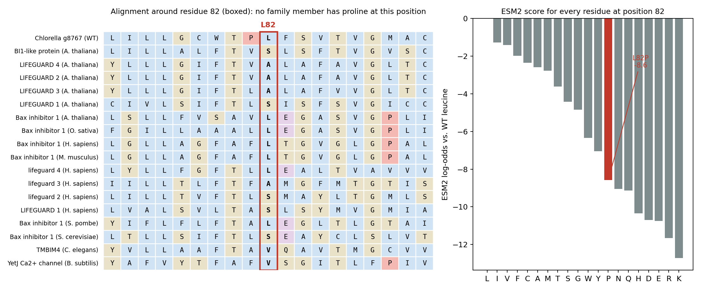

Follow-up · ALE candidate g8767 · 2026-11-04
g8767 is the one ALE missense candidate with a clean Sanger confirmation. A collaborator asked for its full coding sequence and an in silico comparison with related proteins. The gene model is complete and L82P is its only coding change. The protein belongs to the LIFEGUARD branch of the TMBIM family, and no relative has proline at this position, so L82P is a poorly tolerated change in a transmembrane helix. In silico analysis cannot say whether activity goes up or down.
The AUGUSTUS gene model for g8767 was re-extracted from the HS2 purged assembly and checked: the exons join into a 687 bp reading frame that translates to 228 residues, begins with methionine, ends at a stop codon, and contains no internal stop. In ALE, the only coding change in the gene is the single-base substitution at ptg000061l:329542 (A to G on the forward strand, T to C on the coding strand), which turns codon 82 from CTG (leucine) into CCG (proline). One poly-G length difference in an intron (ptg000061l:328249) does not touch the coding sequence.
| CDS exon (5′→3′) | Genomic span, ptg000061l | Length (bp) |
|---|---|---|
| 1 | 329,923–329,958 | 36 |
| 2 | 329,534–329,750 | 217 |
| 3 | 329,188–329,317 | 130 |
| 4 | 328,891–328,981 | 91 |
| 5 | 328,736–328,800 | 65 |
| 6 | 328,496–328,539 | 44 |
| 7 | 328,177–328,218 | 42 |
| 8 | 327,927–327,988 | 62 |
Sequences for HS2 and ALE, nucleotide and protein: g8767_CDS_protein_WT_vs_ALE.fasta. The mutation was confirmed by Sanger sequencing (see the Sanger validation page), which is consistent with the explanation given in the independent-replication section for why NICEM’s assembly did not reproduce this change (assembly quality).
Searching the g8767 protein against Swiss-Prot returns the Arabidopsis LIFEGUARD proteins first (LFG5, then LFG4, LFG2, LFG3 and LFG1), followed by animal and fungal TMBIM proteins. The classical Bax inhibitor 1 proteins are further away. This sharpens the earlier “BI1-like” label: g8767 sits on the LIFEGUARD branch of the TMBIM family. A structure search had already placed its closest solved relative as the Bacillus subtilis YetJ channel, and the same alignment maps YetJ’s pH-sensing aspartates D171 and D195 onto g8767 D186 and D209.
| Accession | Protein | Organism | Identity to g8767* | Residue aligned to L82 |
|---|---|---|---|---|
| Q94A20 | LIFEGUARD 5 (BI1-like) | Arabidopsis thaliana | 44% | S |
| Q9SA63 | LIFEGUARD 4 | Arabidopsis thaliana | 40% | A |
| Q9M1V9 | LIFEGUARD 2 | Arabidopsis thaliana | 42% | A |
| Q9ZQX7 | LIFEGUARD 3 | Arabidopsis thaliana | 42% | A |
| F4JIE8 | LIFEGUARD 1 | Arabidopsis thaliana | 40% | S |
| Q9LD45 | Bax inhibitor 1 | Arabidopsis thaliana | 23% | L |
| Q9MBD8 | Bax inhibitor 1 | Oryza sativa | 20% | L |
| P55061 | Bax inhibitor 1 (TMBIM6) | Homo sapiens | 23% | L |
| Q9HC24 | LIFEGUARD 4 (TMBIM4) | Homo sapiens | 31% | L |
| O74888 | Bax inhibitor 1 | S. pombe | 32% | L |
| P48558 | Bax inhibitor 1 | S. cerevisiae | 29% | S |
| Q11080 | TMBIM4 | C. elegans | 29% | V |
| O31539 | YetJ, pH-sensitive Ca2+ channel | Bacillus subtilis | 22% | V |
* Identity over aligned positions in the 28-sequence MAFFT alignment (FASTA). BLAST identities for the top hits are 37–43%.

Conservation. Position 82 is not invariant: the LIFEGUARD relatives carry serine or alanine and the classical Bax inhibitors carry leucine, so a small or hydrophobic side chain is what the family accepts here. What it never carries is proline, in any of 28 sequences. The Chlorella protein also has proline at position 81, directly before it, where its relatives have valine, alanine, leucine, phenylalanine or threonine. L82P therefore makes a Pro–Pro pair. This replaces and extends the earlier ten-sequence check (60% leucine at this position), which used only classical Bax inhibitor proteins.
Language-model score. ESM2 (650M parameters) scores L82P at -8.6; it ranks 13 of 20 residues at this site, against only −1 to −3 for the conservative changes (isoleucine, valine, phenylalanine, alanine). Of all 4,332 possible single substitutions in this protein, about 20% score worse than L82P, so it sits in the most damaging fifth.
Predicted structure. Residue 82 lies in a predicted transmembrane helix (residues 69–93, supported by hydropathy) and its side chain packs against L51, L54, C78 and W79. The ColabFold models of wild type and mutant keep the helix (local Cα RMSD 0.56 Å over residues 70–95), but model confidence at the site falls from pLDDT 89 to 81, and the mean from 82 to 76. These models are known to under-report the helix-breaking effect of proline, so the intact helix is not reassuring on its own. The change is far in sequence from the pH-sensing aspartates (it aligns to YetJ V76), so it is not a change in the sensor itself.
Supported: L82P is a poorly tolerated substitution in a conserved transmembrane helix of a TMBIM-family protein, which fits the fold-confidence drop already reported on the main page and points to altered stability or channel gating.
Not supported by any of this:
| Assay | Primers F / R | Product | Tm F / R (°C) |
|---|---|---|---|
| Pair 1 | CACCCAGCTCCTAATCCAGCACAGGTTGATGACGTCGAGG | 83 bp | 60.2 / 59.8 |
| Pair 2 | ATGGCCTGCAGTTTCTACCCTCGGTGCCATGAATCCGAAG | 133 bp | 60.0 / 60.5 |